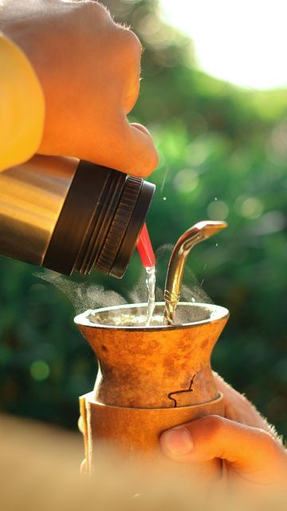

Un estudio asegura que el mate nos hace más felices

Mate y placer van de la mano. Así lo demostró un reciente estudio realizado por el Instituto de Neurología Cognitiva (INECO), al determinar que los argentinos asocian el hábito de ingerir la bebida a con una experiencia placentera.
“El motivo de esto yace en que tomarlo a la mañana, aumenta la liberación de un neurotransmisor llamado dopamina, que estimula los centros de recompensa cerebrales generando una sensación de placer y sentimientos positivos”, explicó la doctora Teresa Torralva, directora del Departamento de Neuropsicología de INECO.
Y agregó: “El mate está asociado con el aumento de la serotonina en el cerebro, lo que se traduce en un equilibrio hormonal y se convierte, entonces, en un aliado natural contra el decaimiento anímico generando un aumento en los niveles de sensación de FELICIDAD.
Para finalizar, la especialista nos comparte 2 enseñanzas valiosas vinculadas con el ritual:
“Cebar no es servir. Cebar significa repartir alimentando, una acción en la que necesito poner una cuota de amor, de cariño y dedicación. La idea es que empecemos a cebar y no a servir mates”.
“La magia más grande que tiene el mate la heredamos de los guaraníes que la descubrieron. Ellos ordenaban su vida según un principio de reciprocidad porque consideraban que no era más rico el que más tenía si no el que mayor capacidad tuviera de compartir los bienes materiales y espirituales con los demás.
Por eso cuando descubrieron la yerba mate y la hicieron parte de sus vidas, porque para ellos era una pócima, decidieron que la tenían que compartir. Y fue frente al fuego, que era sagrado, y pasándose un cuenco, que tomaron esta decisión. Hoy al mate lo compartimos gracias a ese gesto, a ese mensaje tan místico y tan mágico de los guaraníes”.
Se recomienda no mover la bombilla una vez que se inicie el mate para que no se tape y para que la yerba seca no se moje.